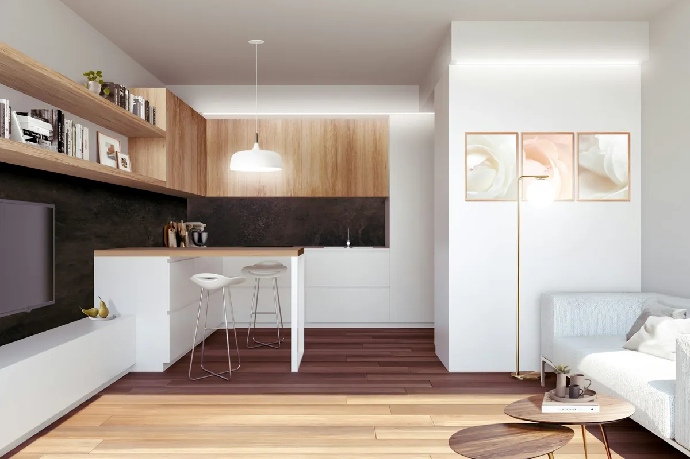

Dëgjojmë
Njohim synimet, hapësirën dhe buxhetin tuaj. Çdo projekt fillon me një bisedë.

Projektim me kujdes.
Nga ideja e parë te detaji i fundit.
Celestia Architects është një studio arkitekture në Tiranë. Projektojmë banesa, interiore dhe fasada duke vendosur në qendër njerëzit që i përdorin.
Nën drejtimin e arkitektit të licencuar Arber Leka, lidhim vizionin arkitektonik me saktësinë teknike që kërkon zbatimi i tij.
Na tregoni idenë tuajLinja të pastra. Materiale të ngrohta.
Një banesë në harmoni me peizazhin.
Sipërfaqet e xhamit, tarracat e mbrojtura dhe materialet e përzgjedhura krijojnë një marrëdhënie të qetë mes interiorit dhe exteriorit.
Vizualizim arkitektonik · Koncept projektimi
Rendera të përzgjedhur nga autorë të jashtëm. Këto janë referenca vizuale, jo projekte të realizuara nga Celestia.



Përdorur sipas Unsplash License. Autorësia i përket krijuesve të shënuar.
Një hapësirë e bukur duhet edhe të funksionojë mirë. Bashkojmë projektimin, materialet dhe logjikën e ndërtimit që në fillim.
Një pikënisje e qartë për projektin.
Një ofertë sipas nevojave tuaja.
Një bazë e saktë për fazën tjetër të hapësirës suaj.
Një drejtim i plotë vizual, sipas mënyrës suaj të jetesës ose punës.
Rikonstruksion i koordinuar nga përcaktimi i punimeve te hapësira e përfunduar.
Projektim arkitektonik dhe dokumentacion aplikimi për ndërtesa të reja, shtesa dhe rikonstruksione.
Projektim teknik i fasadave që bashkon funksionin me karakterin arkitektonik.
Çmime orientuese. Shërbimi dhe çmimi përfundimtar përcaktohen në një ofertë me shkrim pas shqyrtimit të projektit. Tatimet, materialet, udhëtimet dhe tarifat e palëve të treta sqarohen në ofertë.
Zgjidhni shërbimin dhe vendosni sipërfaqen për një buxhet orientues.
Zgjidhni shërbimin që i përshtatet projektit tuaj në Tiranë ose në Shqipëri.
Njohim synimet, hapësirën dhe buxhetin tuaj. Çdo projekt fillon me një bisedë.
Zhvillojmë konceptin, planimetrinë dhe materialet, pastaj i përmirësojmë së bashku.
E kthejmë projektin në dokumentacion teknik të qartë dhe koordinojmë detajet.
Kur përfshihet në marrëveshje, mbështesim koordinimin dhe kalimin nga vizatimet në kantier.
Një banesë e re, një interior i ri,
ose një kapitull i ri për hapësirën tuaj.